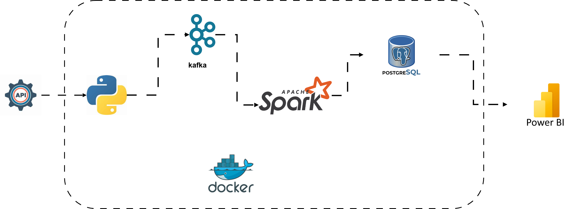
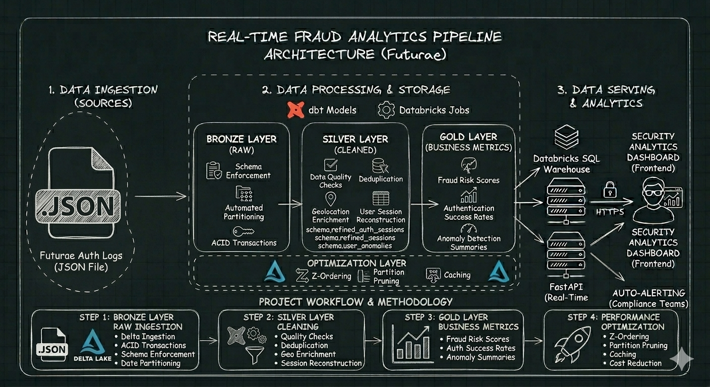
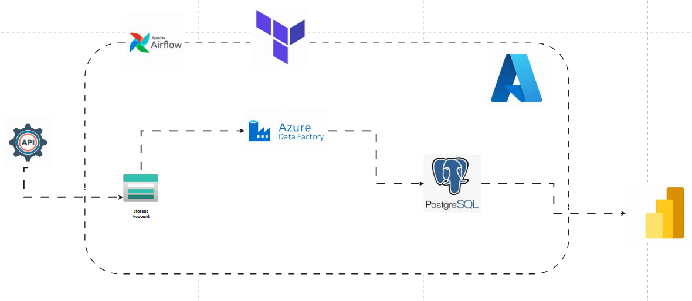
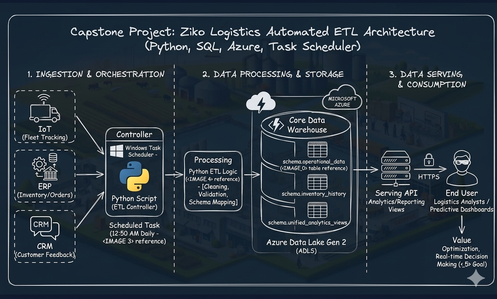
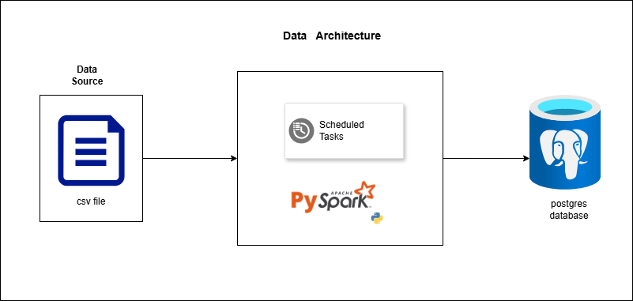
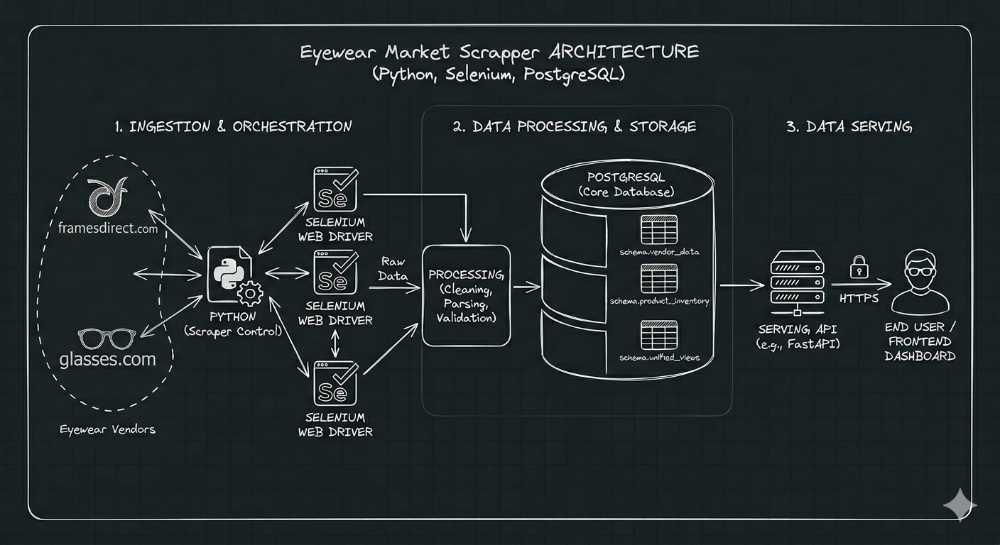

Data Engineer building scalable data pipelines, lakehouse architectures, and real-time streaming analytics platforms.

Problem & Solution: Manual stock retrieval creates latency issues for financial analytics. Engineered an automated streaming engine using Kafka for real-time ingestion, PySpark Streaming for sanitization, and PostgreSQL with Power BI DirectQuery for instant dashboard updates.

Problem & Solution: Scaling security analytics to process 3M+ daily events under 5-minute latencies required replacing legacy batch systems. Implemented a Databricks Medallion Architecture with PySpark for low-latency security log enrichment.

Problem & Solution: Static municipal reporting obscured service bottlenecks. Automated end-to-end extraction using Airflow and Azure Data Factory to curate Silver/Gold analytical data marts in Azure PostgreSQL, with automated Terraform provisioning.

Problem & Solution: Disparate data silos delayed logistics decision-making. Built an automated cloud ETL pipeline using Python to ingest high-velocity IoT and ERP data into Azure Data Lake Gen 2, creating a centralized single source of truth.

Problem & Solution: Fragmented banking data caused record redundancies and poor analytics readiness. Engineered an automated ETL platform with PySpark, PostgreSQL, and Airflow to normalize transaction logs for executive reporting.

Problem & Solution: Fragmented vendor data led to pricing inconsistencies across product catalogs. Created a specialized automated web scraping and ingestion pipeline using Selenium, Pandas, and PostgreSQL for unified price benchmarking.